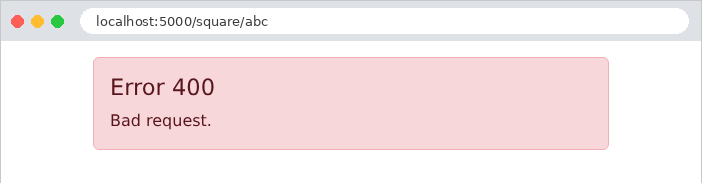
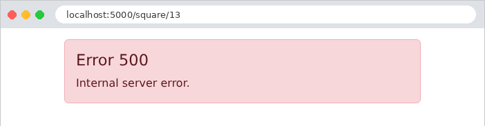

7. El ciclo de vida de una solicitud
Entre la llegada de una solicitud y el envío de su respuesta, [Flask] pasa por varias etapas, y la aplicación puede intervenir en cada una. Ya nos hemos encontrado con varias de ellas: los convertidores de variables de ruta (ejemplos 02 y 12), las funciones [before_request] (ejemplos 16, 22 y 23) y los manejadores de errores (ejemplos 08 y 12). Este capítulo las reúne en un único ejemplo, que muestra un mensaje en la consola en cada etapa para que pueda observarse el orden:

- 1 y 8. El middleware WSGI. [WSGI] (*Web Server Gateway Interface*) es el estándar que conecta un servidor web escrito en [Python] con una aplicación. Desde el punto de vista del servidor, una aplicación [Flask] es simplemente un objeto invocable que recibe la descripción de la solicitud y genera la respuesta. Un middleware es un objeto de tipo similar que envuelve la aplicación: intercepta la solicitud antes de que llegue a [Flask] y la respuesta después. Es el equivalente de los filtros de servlet de [Java];
- 2. Enrutamiento. [Flask] busca la ruta que corresponde a la URL, y los convertidores de ruta transforman las variables de la ruta;
- 3 y 4. Las funciones [before_request], que se ejecutan en el orden en que se registraron. Si alguna de ellas devuelve una respuesta (o lanza una excepción), el procesamiento se detiene allí: no se llama a la acción. Aquí es donde se verifica que un usuario haya iniciado sesión (en el capítulo siguiente);
- 5. La acción, y la vista que genera;
- 6. Las funciones [after_request], que reciben la respuesta, pueden modificarla (agregar un encabezado o una cookie) y deben devolverla. Se ejecutan en el orden inverso al de su registro;
- 7. Las funciones [teardown_request], que se ejecutan siempre al final de todo, incluso si una excepción ha interrumpido el procesamiento. Ya no pueden modificar la respuesta; su propósito es liberar recursos (como cerrar una conexión a la base de datos);
- x. Los manejadores de errores ([errorhandler]): una excepción lanzada por una función [before_request], por una acción o por una vista se transfiere al manejador registrado para su clase, que genera una respuesta de error. Esta respuesta pasa entonces por las funciones [after_request], igual que una respuesta normal.
Son los equivalentes de los interceptores de [Spring MVC] y de los filtros de acción de [ASP.NET Core MVC]. Las funciones [before_request], [after_request], y [teardown_request] suelen denominarse hooks.
7.1. Ejemplo 24: las etapas del procesamiento de una solicitud
La aplicación tiene una sola acción, que calcula el cuadrado de un entero: [/square/7]. Según la URL, tiene éxito o falla de distintas maneras.
7.1.1. El middleware WSGI: filters/logger.py
- línea 7: el middleware recibe la aplicación que envuelve;
- línea 10: el método especial [__call__] hace que el objeto sea invocable: [middleware(environ, start_response)] ejecuta este método. Es la firma que impone [WSGI]: [environ] es un diccionario que describe la solicitud (el método en [REQUEST_METHOD], la ruta en [PATH_INFO], los parámetros en [QUERY_STRING], los encabezados, etc.); [start_response] es una función proporcionada por el servidor, a la que la aplicación llama para informar el código y los encabezados de la respuesta;
- líneas 12–17: el middleware muestra la solicitud. Es el mensaje n.º 1: todavía no ha pasado nada en [Flask];
- líneas 22–24: para determinar el código de la respuesta, el middleware pasa a la aplicación una función propia, en lugar de [start_response], que registra el código al pasar y luego llama a la función real. Es una función interna (definida dentro de otra función): tiene acceso a las variables de la función que la contiene, en este caso la lista [status];
- línea 27: la llamada a la aplicación envuelta: el resto del procesamiento ocurre dentro de esta llamada;
- línea 28: el mensaje n.º 8, cuando [Flask] ha terminado.
Un middleware opera en el nivel de [WSGI]: desconoce [request], [g] y las rutas de [Flask]. Se usa para el procesamiento que se aplica a todas las solicitudes, sea cual sea la aplicación: registro de actividad, compresión, manejo de un proxy, etc. [Werkzeug] ofrece algunos, como [ProxyFix], que corrige la dirección del cliente cuando la aplicación se encuentra detrás de un servidor proxy (el caso de estudio lo trata en relación con la dirección IP de los clientes).
7.1.2. El convertidor: filters/integer.py
Un convertidor (ejemplo 12) que acepta cualquier segmento de una ruta ([[^/]+]: uno o más caracteres distintos de [/]) y lo convierte por completo, o a [None] si no es válido. A diferencia de [<int:n>], que devolvería una página 404 para [/square/abc], aquí la acción determinará el resultado. Muestra el mensaje n.º 2.
7.1.3. Acciones marcadas: filters/marks.py
Las funciones [before_request] se ejecutan antes de todas las acciones. A menudo, un procesamiento se aplica solo a ciertas acciones. Una manera simple de indicarlas es marcarlas:
Estos dos decoradores no modifican la acción en sí: le agregan un atributo (en [Python], una función es un objeto al que se le pueden agregar atributos) y la dejan intacta. Las funciones [before_request] buscarán estas marcas en la acción a la que apunta la solicitud.
7.1.4. Hooks: filters/hooks.py
- líneas 10–11: la acción que atenderá la solicitud. Después del enrutamiento, [request.endpoint] contiene el nombre de la ruta seleccionada ([calc.square]: el nombre del blueprint, un punto y el nombre de la función); [current_app.view_functions] es el diccionario que asocia cada nombre con su función correspondiente. Si ninguna ruta coincide, [request.endpoint] toma el valor [None] y la función devuelve [None];
- líneas 15–16: ¿está definida la marca? [getattr(object, name, default)] devuelve el atributo con el nombre dado, o el valor predeterminado si no existe (o si el objeto es [None]);
- línea 19: las funciones de devolución de llamada (callbacks) se registran mediante una función a la que llama [app.py];
- líneas 24–28: el primer hook, mensaje n.º 3: para una acción marcada con [block], el parámetro [?block] de la URL provoca un error 403 (*Forbidden*, acceso denegado): [abort] lanza una excepción, que interrumpe el procesamiento;
- líneas 31–35: el segundo hook, mensaje n.º 4: para una acción marcada con [timing], la hora de inicio se almacena en [g]. [time.perf_counter()] es un reloj preciso diseñado para medir duraciones;
- líneas 39–43: mensaje n.º 6. La función recibe la respuesta y debe devolverla (posiblemente modificada). [response.status_code] es el código de la respuesta;
- líneas 47–52: mensaje n.º 7, que contiene el tiempo transcurrido desde el hook n.º 4. La prueba ["start" in g] verifica que la medición haya comenzado. La función recibe la excepción que interrumpió el procesamiento, si hay alguna que no haya sido manejada, y [None] en caso contrario.
7.1.5. Manejo de errores: filters/errors.py
- líneas 9–13: un manejador de excepciones para la clase [ValueError] (y sus subclases): un error “inesperado”, convertido en una página de error “personalizada” con código de estado 500 (*Internal Server Error*). El mensaje de la excepción se muestra en la consola, pero no en la página: puede contener detalles internos que no son pertinentes para el usuario;
- líneas 17–20: un manejador para todos los errores HTTP. [abort(400)], [abort(403)], una URL de una ruta inexistente (404), un método prohibido (405): todos lanzan una excepción de una subclase de [HTTPException] ([BadRequest], [Forbidden], [NotFound]...), que lleva su código en el atributo [code]. Este único manejador reemplaza, por lo tanto, todas las páginas de error en inglés de [Werkzeug] por las nuestras.
Ante una excepción, [Flask] selecciona el manejador registrado para la clase más cercana a la suya. También se puede registrar un manejador para un código específico: [@app.errorhandler(404)]. Una excepción que no tiene manejador se convierte en un error 500: en modo de depuración, es la página de depuración (ejemplo 03); sin modo de depuración, es la página estándar de error 500 o la página del manejador registrado para el código 500.
7.1.6. El controlador y la página de error
- líneas 9–11: la ruta usa el convertidor [integer]; la acción lleva ambos decoradores. Aquí el orden también importa (ejemplo 12): los decoradores se aplican de abajo hacia arriba, y el decorador de ruta debe ser el último en aplicarse (el primero escrito) para registrar la función decorada;
- línea 15: un parámetro que no es un entero: error 400;
- línea 17: el número 13 provoca un error “inesperado”;
- línea 18: el caso normal.
La página de error recibe el código de error y muestra un mensaje apropiado.
7.1.7. Configuración: app.py
- línea 21: el convertidor;
- líneas 25–27: las funciones de devolución de llamada y los manejadores de errores;
- línea 29: el middleware. [app.wsgi_app] es el método mediante el cual el servidor llama a la aplicación [Flask]; se reemplaza por el middleware, que llamará al anterior. Envolvemos [app.wsgi_app] en lugar de [app] mismo, para que la variable [app] siga siendo el objeto [Flask], con sus métodos ([run], [route]...).
7.1.8. Ejecución
El caso normal, [/square/7]:

La consola del servidor muestra las ocho etapas, en orden:
La última línea es la entrada del registro del servidor de desarrollo de [Werkzeug], escrita después de enviar la respuesta. Un acceso bloqueado, [/square/7?block]:

La primera llamada lanzó una excepción: la segunda llamada y la acción no se ejecutaron. La respuesta de error, generada por el manejador, pasa por [after_request]; [teardown_request] fue llamada, pero no mostró nada, ya que la medición no había comenzado. Un parámetro que no es un entero, [/square/abc]:

Esta vez se llamó a la acción, [None], y esta lanzó el error 400. Un error “inesperado”, [/square/13]:

El manejador trató la excepción: el usuario ve la página de error “personalizada”, no la página de depuración, aunque el modo de depuración esté activado. Por último, una URL que no corresponde a ninguna ruta, [/unknown]:
Falló el enrutamiento: no hay ruta, ni convertidor, ni acción. Las funciones de devolución de llamada se ejecutaron, pero no se mostró nada porque no encontraron una acción de destino. La página 404 es la nuestra:
Vayamos a lo esencial. Las funciones [before_request] son el lugar adecuado para las verificaciones comunes a muchas acciones (¿Ha iniciado sesión el usuario? ¿Tiene permiso para acceder a esta acción?): el capítulo siguiente las usa para la autenticación. Los manejadores de errores garantizan que el usuario nunca vea una página técnica, sea cual sea el error: el caso de estudio incluye uno para cada tipo de error.